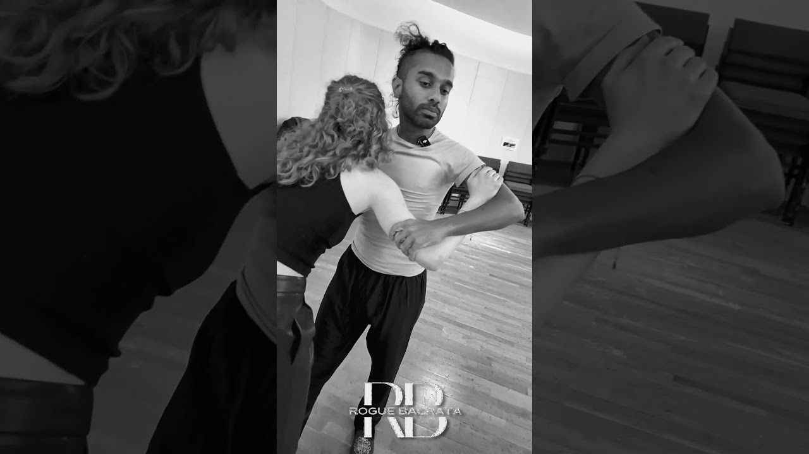

Partner connection
Frame, tone, embrace and breath. How contact carries information, and how to keep it alive through turns, separations and close work.
Partner connection workshops · London
deRogue teaches the part of partner dance that steps can't: how two bodies listen, lead, follow and move as one. For dancers of any style, and for people who have never danced.
Now booking
Every Wednesday, 7:30–9:00pm. Ninety focused minutes on the single thing every partner dance depends on, with a break for drinks and practice. Same room as Rogue Bachata Wednesdays, followed by a social until late.
Or emailroguebachata@gmail.com
Philosophy
Connection starts alone. A dancer who owns their balance can offer a clear signal and receive one without collapsing into their partner.
Lead is a question; follow is an answer; both are listening. We train the conversation, not the choreography.
When two people trust the channel, they can let go of control. That is where freedom in partner dance actually lives.
Partner dance isn’t a fixed set of steps, patterns and rules. Every person already has movement inside them — deRogue is about two people creating movement that speaks for both of them, and listens to both of them. We want you to taste connection: something that only exists between two particular human beings, in that particular moment.
Oscar was once the nervous beginner at a sensual bachata class, standing well back from the floor. One of the most in-demand dancers in the room came over, took him into close embrace, and told him to forget everything he thought he knew — just feel the connection and move with her. That’s the whole of deRogue, really: connection before steps.
Mistakes make art. Nothing perfect is interesting. When a partner does something unfamiliar, or gets it “wrong,” that should excite you rather than embarrass anyone — it challenges your muscle memory and opens a dimension you weren’t expecting, the same way an unexpected note can make a piece of music more alive rather than less. Once, mid-move, someone else on the floor walked straight through the space Oscar had planned to move into. He had to stop dead. Embracing that unplanned interruption made the movement more interesting than the plan ever was — and it became a technique he now uses on purpose.
It isn’t only chemistry with the “right” person. As a dancer develops, they become able to connect with more and more people over time — not everyone, but noticeably more than before. Leading and following are closer to a fifty-fifty co-creation than the lead directing everything: the more experienced a leader gets, the less they impose and the more they receive and shape around what the follower offers. The dance ends up different with every partner, because it’s built from what that person actually brings, not applied to them from a template.
Close embrace isn’t really about attraction. It’s mostly about familiarity — Oscar’s own first close-embrace experience felt shocking and unfamiliar, and people adjust with exposure. What matters more is reading a partner’s real-time comfort with closeness: how much they extend, how much distance they hold, which varies by person and can vary day to day even for the same person. Sensing and respecting that is a teachable skill — one that even experienced teachers don’t always get right.
Dancers of any experience level, and anyone genuinely interested in movement — not literally anyone off the street. If you’ve never danced partner work before, start with a Rogue Bachata beginner class first, so the deRogue room can move forward together from some shared baseline. The one exception: every so often someone with no formal dance experience but a natural gift for listening walks in from their very first bachata class and turns out to be an exceptional follower. Dancing with someone like that is one of the best feelings there is.
Nobody here is chasing the title of best social dancer in the city — that’s a bit like calling yourself the best socialiser. Connection isn’t a rankable solo skill; it depends on the mix of people in the room. These exercises aren’t about over-technicalising your dancing either — the only point of them is to help you connect better, and with more people. If you’re genuinely expert at connection, it shows up as range: the ability to connect with far more people than you’d have imagined, not the ability to dictate to a partner what to do.
See it
A moment from the floor — what this connection work actually looks like between two dancers.

The practice
Four strands that run through every workshop. Each session goes deep on one of them.
Frame, tone, embrace and breath. How contact carries information, and how to keep it alive through turns, separations and close work.
Leading through the body rather than the arms. Following as active interpretation rather than waiting. Both roles taught to everyone.
Mobility, core, balance and elastic strength for partnering: the conditioning that makes a dip safe and a spiral effortless.
Themed series that stay with one idea for several weeks: weight sharing, counterbalance, musical dialogue, stillness.
Six principles
Developed on the social floor with Rogue Bachata, and written for any partner dance.
Ground in yourself, listen to your partner, expand into the space.
Your centre of gravity travels on a continuous, unbroken path.
The hardest principle to teach: the core has to move in an uninhibited, stable, flowing line while the rest of the body moves around it — neuromuscular control you can’t consciously micromanage, only build through repetition.
Stop the movement, find each other, then redirect together.
A drill for both roles: deliberately interrupt a planned movement mid-way, feel the connection in that pause, then consciously choose a new direction — up, down, back, forward — instead of always finishing the move the habitual way. It stops follows from racing ahead of the actual signal, and stops leads running on autopilot.
When bodies meet, rebound elastically or redirect.
“Roll” means the touching parts of the body stay in continuous rolling contact, never a static grip or a rub, unless you break it on purpose for a specific move. “Bounce” means bringing a partner in and letting them rebound elastically. Both are drilled with contact and without it. A lot of these principles are meant to be broken once you understand them — that’s what deRogue is about.
When connection is lost, surrender your movement and find your partner before continuing.
We treat the break as information, not fault — the same instinct that makes a “wrong” note interesting in music.
Relaxed, almost lazy, yet exactly on the music. A paradox shared by good dancing and good music.
Resolved through deep, calm breathing — the same thing that lets a singer or musician play a fast passage precisely while looking unhurried. With practice, time itself feels like it slows down, even though the execution is faster and sits exactly on the beat.
Partners walk around the space keeping a small foam board wedged between them at hip height, roughly half an arm’s length apart, without letting it drop. Trains stable, legato-quality walking.
One partner becomes an “office chair” — staying at a constant height while the other rotates and travels them around the space on imaginary wheels. Legato quality, combined with rotation.
Two people hold hands close together without quite touching, sensing one shared centre of gravity between them, as if they were becoming one body. Connection carried by shared awareness of weight and balance, not physical contact.
A group — or a pair — walks around a space, continuously filling the empty gaps left by everyone else’s movement, using every dimension of the room. Builds spatial awareness and connection to the whole floor, not just one partner.
Partners lean into each other — or lean out together, away from each other — to stay mutually supported through the connection point, rather than gripping or holding tension in the arms. It draws on leaning concepts already found in kizomba and tango. It also works with no touch at all: two hands held apart but sensed as leaning toward one another, pure inward energy, explored inward, outward and to the side.
These are a few of the exercises we use — there are more on the floor each week. Come find the rest in class.
For any partner dance
We borrow bachata's close embrace and slow, clear pulse to make connection easy to feel. Then you take it home to whatever you dance.
BachataSalsaKizombaZoukTangoWest Coast SwingLindy HopBallroomContact improvisation
Teachers
A performer at the highest levels of theatre with more than 20 years on the social dance floor. Oscar brings stage presence and body awareness into partner work.
Trained in contemporary, with experience across several dance styles. Bo is known on the London social floor for her connection and musicality.